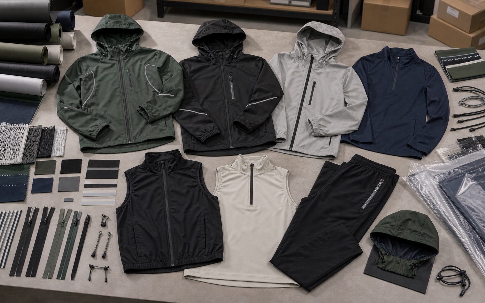

Windbreakers, Shells, and Vests
- Windbreakers, rain shells, packable jackets, lightweight vests, hooded shells, and training coats
- Water-resistant woven fabric, ripstop, softshell, reflective tape, zipper customization, and drawcords
- Useful for outdoor brands, running clubs, schools, gyms, and event merchandise programs